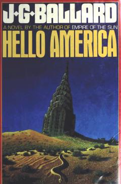

HAAQShning vayronaga aylangan kelajagi va g'aroyib ekspeditsiya haqidagi fantastik roman.
Kitob XXI asr oxirida iqlim o'zgarishi va iqtisodiy tushkunlik tufayli qarovsiz qolgan AQSh hududiga sayohat qilgan dengizchilar ekspeditsiyasi haqida hikoya qiladi. Veyn boshchiligidagi guruh Nevada cho'lida o'zini AQSh prezidenti deb e'lon qilgan Charli Menson bilan to'qnash keladi. Asar Amerikaning afsonaviy ramzlari va hokimiyat arboblarini o'tkir satira ostiga olgan fantastik roman hisoblanadi.